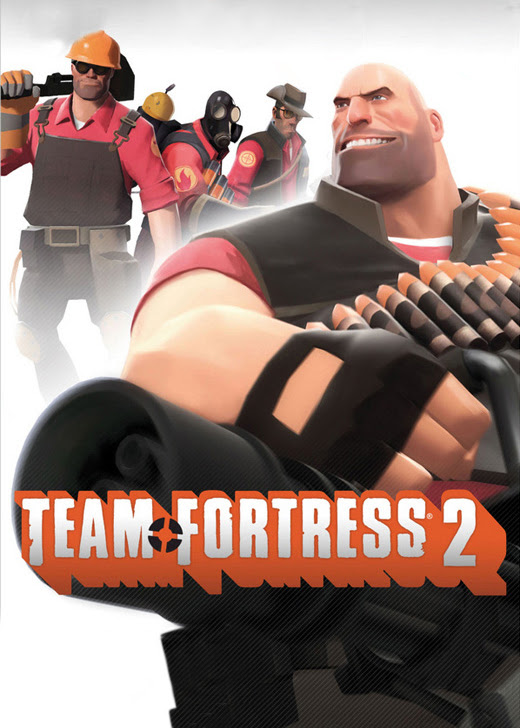
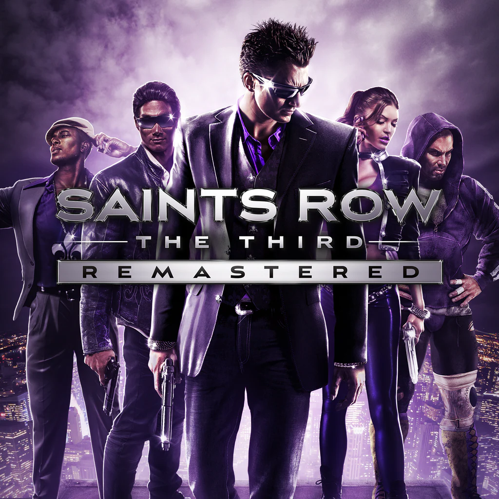

team fortress 2
багатокористувацька командна відеогра в жанрі шутера від першої особи, розроблена компанією Valve
Corporation та випущена в 2007 році.
Гра була анонсована ще в 1998 році як продовження моду Team Fortress для Quake, але концепція та
дизайн проекту відтоді істотно змінилися. Team Fortress 2 візуально виконана в
мультиплікаційному карикатурному стилі з використанням лицевої анімації, заснованої на творчості
таких художників початку двадцятого століття як Дж. К. Леєндекер, Дін Корнуелл та Норман Роквелл
.
Гра була офіційно випущена 10 жовтня 2007 у складі збірки The Orange Box. В країнах СНД
випускається компанією Бука в складі The Orange Box, а також як незалежний програмний продукт.
23 червня 2011 гра стала безкоштовною у Steam.
Read more

Among us
багатокористувацька відеогра на соціальну дедукцію, створена американською компанією InnerSloth
15 червня 2018 року. Гра виконана в космічному антуражі. Гравці мають дві ролі: цивільні члени
екіпажу і самозванці. Метою цивільних є знайти самозванців і нейтралізувати їх, а самозванців —
убити всіх цивільних.
2018 року гра не отримала широкого розголосу, але у вересні 2020 завдяки Twitch, YouTube і іншим
платформам вона стала популярною, маючи 1,5 млн одночасних гравців. Внаслідок різкого росту
інтересу, до неї було анонсовано сиквел — Among Us 2. 23 вересня 2020 вихід сиквела скасували,
ухваливши рішення розвивати оригінальну гру. Гра надихнула багатьох користувачів на написання
історій, теорій, малюнків та на інші прояви творчості.
Read more

Saints row the third
серія відеоігор в жанрі пригодницький бойовик, створена компанією Volition і видана THQ та Deep
Silver. Серія розповідає про Святих 3-ї вулиці, вигадану вуличну банду, яка спочатку діяла в
районі Saints Row, звідки і пішла назва серії.
Read more

Grand Theft Auto V
пригодницька відеогра 2013 року, розроблена Rockstar North та видана компанією Rockstar Games.
Події відбуваються у вигаданому штаті Сан-Андреас, концепція якого заснована на південній
Каліфорнії. Сюжетна лінія веде за трьома злочинцями, які перебувають під тиском урядового
відомства та авторитетних кримінальних фігур. Дизайн відкритого світу дозволяє гравцям вільно
переміщуватися по місцевості Сан-Андреаса та вигаданому місту Лос-Сантос, на базі Лос-Анджелеса.
Read more

Assassin's Creed IV: Black Flag
відеогра в жанрі пригодницького бойовика, розроблена компанією Ubisoft Montreal для платформ
PlayStation 3, Xbox 360, Wii U, Windows, а також для платформ восьмого покоління.
Протагоністом гри виступає пірат Едвард Кенвей (англ. Edward Kenway), батько Гейтема Кенвея з
Assassin's Creed III; дія розгортається в Золоту добу піратства, в Карибському морі на декількох
островах на початку XVIII століття. Едварду випадає нагода розбагатіти, розшукавши таємничу
«Обсерваторію», сховану десь у джунглях. Проте її ж шукають і тамплієри з метою отримати владу
над світовими лідерами.
Read more

Call of Duty Black Ops 2
мультиплатформенна відеогра в жанрі військово-фантастичного тривимірного шутера від першої особи.
Є дев'ятою грою в серії Call of Duty і прямим сиквелом Call of Duty: Black Ops. Видається
компанією Activision. Розробляється американською студією Treyarch. Офіційний анонс гри — 1
травня 2012 року, реліз відбувся 13 листопада 2012 року.
Read more